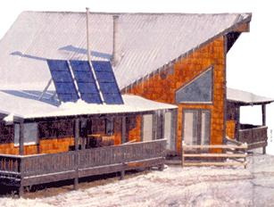
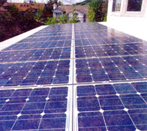
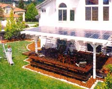

Solar markets flee overseas and leave acurious legacy behind.
When photovoltaic (PV) energy panels were first developed at Bell Laboratories in the early 1950s, scientists envisioned them primarily as an onboard source of power for future spacecraft. The PV effect - or the process by which sunlight striking a layer of silicon or selenium produces a stream of electrons (electricity) - had actually been discovered a century earlier. Bell, however, was the first to join several PV cells into panels and commercialize the product as an extremely durable and dependable source of power. At $40,000 per watt of energy produced, these were a curiosity best left to governments with deep pockets. Fifteen years later, when MOTHER was set to publish its first issue, PV modules were just beginning to enter the homeowner marketplace. Though the promise of smokefree, power line-less electricity was alluring, systems were still so expensive ($50,000 to $75,000) that only the very wealthy could afford to plug in.
PV came of age just as the nation was experiencing the worst of the 1970s energy crisis. The government responded by investing in PV research programs, installing thousands of panels in federal buildings and offering considerable tax breaks to those who incorporated PV at home. System prices began to fall. At the same time, a wave of "back-to-the-landers" found their inspiration to seek a more simple life in the country and discovered that a PV system could make off-the-grid living an exponentially easier proposition. Compared with the back-breaking expense of extending grid power to a remote home, even a $20,000 PV system of panels, batteries and inverters could pay for itself as soon as it was switched on. Slowly (often far too slowly for our patience), costs continued to decrease, until we at last trumpeted the revolutionary $5 per watt panel in 1994.
Regrettably, prices have not fallen appreciably since then, and as a result the domestic solar electric industry is experiencing a midlife crisis as it approaches its 50th birthday. Even manufacturing gadflies will admit that PV is having a tough time finding a boom market in North America, primarily because the government is not getting involved. "The real PV business is overseas," reports Paul Maycock, President of PV Energy Systems in Warrenton, Virginia ( www.pvenergy.com ). "Over 100,000 systems were installed in the developing world just last year, and the large-scale investment that countries like Germany and Japan are making is really boosting business there. Currently, there is a worldwide shortage of solar panels because of all the buying that's going on."
"ONLY A FEW MILLION DOLLARS HAVE BEEN SPENT ON THE CLINTON ADMINISTRATION'S 'MILLION SOLAR ROOFTOPS' INITIATIVE. IT WAS AN EMPTY GESTURE IN MANY WAYS."
-JOHNNY WEISS, DIRECTOR OF SOLAR ENERGY INTERNATIONAL
The German and Japanese programs are ambitious by any standards. The Japanese government has committed itself to helping 70,000 homeowners install PV systems, at a full 30% of cost. Germany is aiming for 100,000 systems in a similarly funded effort. Lower consumer costs for power are certainly a bonus in a government-sponsored energy program, but ultimately the political rationale comes down to clean air. "The Japanese in particular have had to conclude that ultracongested urban areas in tandem with traditional coal- or oil-fired power plants are not a boon to health," says Maycock. "They see the wisdom in thinking green." Both programs are advancing utility-intertie connections, in which power to the home comes from the existing power grid as well as the supplemental PV system. If power consumption is low enough and the PV system is large enough, these homes can actually produce more power than they consume, in which case the utility is required to purchase the excess. "One of the most ambitious aspects of the German program," Maycock added, "is that it stipulates that the utility must buy back PV power at the rate of 50 cents per kilowatt hour. That's more than twice what the utility charges for it's own power, so we can envision, then, a real economic boon to thinking PV. These systems can readily pay for themselves over time."
"System payback" is a term long used to describe the practicality or impracticality of solar power, particularly here in North America. Homeowners must wonder what use there is in investing in a utility-intertie system when the power produced by its 20 panels, each producing 75 watts in peak sunlight, can never offset the $20,000 installation cost. "It's a good question," admits Johnny Weiss, director of Solar Energy International in Carbondale, Colorado. "And until the government puts its money where its convictions are supposed to be, the answer is that there isn't compelling economic interest in doing it. Only a few million dollars have been spent on the Clinton administration's 'Million Solar Rooftops' initiative. It was an empty gesture in many ways. The U.S. government has eternally provided incentives to the off, natural gas and coal industries. If we had to factor in the gigantic tax breaks along with the cost of that little military adventure to unplug our supply in the Persian Gulf, we wouldn't be paying seven to 15 cents a kilowatt hour for power. It'd be twice that. And all the while there's been this totally practical and available source of electricity at our doorstep."
It is clear that the domestic market for PV cannot truly thrive with out government incentives or a comprehensive requirement for utilities to buy back power. Still, the utility market itself may provide an incentive for consumers. Deregulation of the utility industry has, for the moment, caused energy prices to skyrocket nationally, with the Northeast among the areas hardest hit. Since this near doubling of energy prices has only just hit the marketplace, there is no way of immediately gauging its effect on PV sales, but manufacturers are anticipating a surge in interest. Even factoring out staggering kilowatt hour prices, the solar market continues to grow (sales overall are expected to increase by 10% in 2000) and innovate, though often, perhaps, in curious directions.
The latest market trends begin with both large- and small-scale utility-intertie con nections. Sales of large systems (2 kilowatt panel arrays or larger) are up 68% in 1999, primarily because of Y2K power outage fears in tandem with some aggressive financing options available to some PV buyers in California. Small intertie systems are experiencing a similar upswing in sales. These four- or six-panel, 100- to 200-watt systems, complete with DC to AC inverters from companies such as Evergreen Solar of Waltham, Massachusetts are selling remarkably well, even with prices that top out at $2,200. They are designed to be installed in minutes and hook seamlessly into a home's grid power. What industry advocates can't deny, though, is that even with an output of 200 watts per hour, the systems can contribute only a miniscule amount of the power an average home consumes each day, and at $11 per watt, they are a very expensive proposition. We are left to wonder how an ostensibly energy-saving product sells, even when it does not wholeheartedly embrace thrift. "Well, it's true that you'd have to be [truly] green to buy one," admits Maycock. "To consumers it represents another type of value." For Weiss, this alternative value has particular resonance. "It's a home product like any other. If it pleases you to see solar being produced, then the product has value. It's not really fair to saddle solar products with a standard that almost no other home product has to bear. I mean, do people ever ask if their cars or SUVs pay for themselves over the course of their usable life?"
An industry development nearly as expensive per watt but perhaps more practical is "building-integrated" PV. These systems, which include solar windows, shingles and siding, are meant to do away with the traditional bank of solar panels mounted on a backyard tracker, in favor of a more seamless and unified design. The amorphous (also called thin-film) module is made by vaporizing the silicon and depositing an ultrathin layer of it onto a flexible substrate. They can be bent or shaped to accommodate any surface, and though much less efficient than single-crystal or multicrystalline designs (the traditional panel construction techniques), their adaptability and beauty hold tremendous promise. Some roof systems can be sold as just that - a complete roof - designed to last 20 years or more generating power and repelling the elements. Unisolar's SHR-17 PV shingle (actually 86" by 12"), for instance, generates 17-watts at peak output, is designed to tolerate shading (traditional panel output evaporates quickly with even a slight shade cast across it) and retails for $139. A two kilowatt array of these shingles is not cheap, at $16,000 ($8 per watt), but a consumer can still envision a reasonable payback schedule. The practicality doesn't end there. "After all," concludes Weiss, "When was the last time you bought a roof that paid for itself?"
Related info:
Heavy Hitters
|
 Solar Plate on the roof of home |
 |
 |